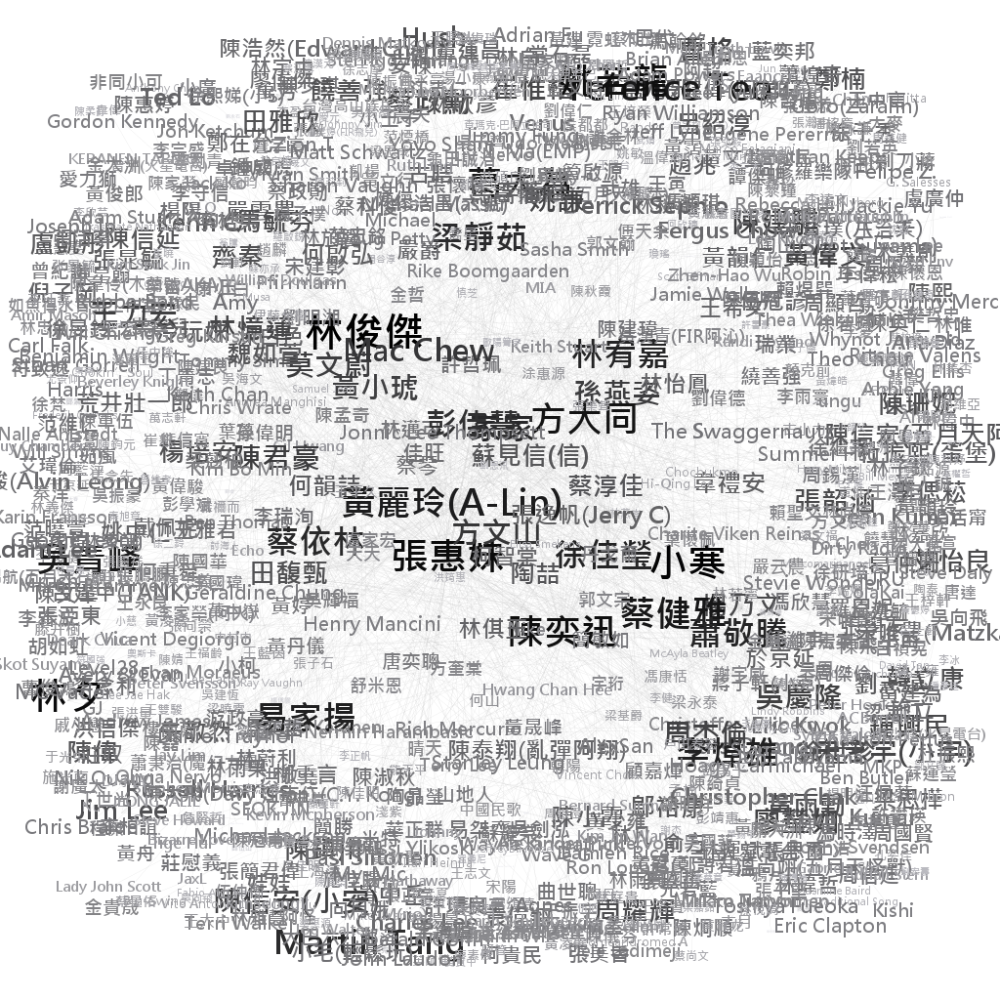

點擊圖片可放大檢視
1 Q1
1.1 Core-periphery Analysis in UCINET
一張含有 天空, 地圖, 文字 的圖片 描述是以高可信度產生
Figure 1.1: Core-periphery analysis
在二分法中，紫色的節點被歸類為核心，藍色的節點則代表邊陲。我們可以發現核心節點與核心節點間彼此聯絡密切，邊陲節點大多僅與核心節點相連，邊陲節點與邊陲節點間的互動較少。連續性的coreness則以節點的大小表示，節點越大，其coreness數值越高。
一張含有 天空, 地圖, 文字 的圖片 描述是以非常高的可信度產生
Figure 1.2: Degree
節點文字的大小代表該節點的degree數值，即該節點與多少個其他節點相連接。我們發現位處核心地帶的節點其degree值大多高於位於邊陲地帶者，因其與核心節點和邊陲節點皆有所往來，而邊陲地帶者多半僅與核心節點連結。
一張含有 天空, 地圖 的圖片 描述是以非常高的可信度產生
Figure 1.3: Eigenvector Centrality
節點文字的大小代表該節點的eigenvector centrality數值。eigenvector centrality除考量自身節點的degree外，亦受到相連節點的degree影響。該視覺化結果與degree相似，然我們發現若節點與核心節點相連，其值將因而增大(e.g., 14, 20)，若未與任何核心節點相連者其值則變得更小(e.g., 17)。
一張含有 地圖, 天空, 文字 的圖片 描述是以非常高的可信度產生
Figure 1.4: Betweenness Centrality
節點文字的大小代表該節點的betweenness centrality數值，用以衡量該節點位於任兩個其他節點間最短距離的情況，betweenness centrality越高者，越能反映出該節點的橋樑性質。
我們發現核心節點其betweenness centrality大多高於邊陲節點，尤以1、34兩節點最為明顯。此二節點連接了多個邊陲節點，邊陲節點們高度仰賴此二節點方能夠接收或傳達資訊，意即掌握了邊陲節點向外連接的最短距離，因而擁有較高的betweenness centrality。
一張含有 天空, 地圖, 文字 的圖片 描述是以非常高的可信度產生
Figure 1.5: Closeness Centrality
節點文字的大小代表該節點的closeness centrality數值，即該節點到達其他節點所需要的最短距離總和倒數。我們發現closeness centrality與coreness的結果相似，核心節點closeness centrality高於邊陲節點，意即核心節點相較邊陲節點處於網絡中更加中心的位置。
1.2 Centrality and Clustering Coefficient Analysis in Gephi
以下依據4種centrality指標(degree, eigenvector centrality, betweenness centrality, closeness centrality)以及clustering coefficient分別繪製網絡圖。節點與節點文字大小一同顯示該centrality指標數值；節點顏色則表示其clustering coefficient，顏色越深，代表該節點的clustering coefficient越高。
一張含有 黑色, 室內 的圖片 描述是以高可信度產生
Figure 1.6: Degree
我們發現clustering coefficient高者，其degree數都不大。以17為例，其僅連結6、7，而6、7兩者相連結，故其clustering coefficient為1；反之，degree數值大者，其clustering coefficient通常不高。以34為例，其向外連接多達17個節點，然與34相連的節點彼此間難以完全相互連結（如：9、10並未相連接），故其clustering coefficient較為低。
一張含有 黑色, 室內 的圖片 描述是以高可信度產生
Figure 1.7: Eigenvector Centrality
eigenvector centrality的結果與degree相似，clustering coefficient高者，其eigenvector centrality值都不高；eigenvector centrality數值高者，其clustering coefficient通常不高。
一張含有 黑色 的圖片 描述是以非常高的可信度產生
Figure 1.8: Betweenness Centrality
一張含有 黑色 的圖片 描述是以高可信度產生
Figure 1.9: Closeness Centrality
2 Q2
2.1 i.
圖 b-1 為 1972 年到 2007 年間（以下稱第一時期）台大公衛領域共同著作網絡圖，而圖 b-2 則為 2008 年到 2017 年間（以下稱第二時期）的共同著作網絡圖，其中主題標籤的大小代表該主題的 degree 數量。
整體而言，在兩個時期之中，最為熱門的主題皆是 taiwan，其他熱門主題包含 risk, association, mortality 等等。然而在第一個時期中，整體網絡的節點數為 404，每個節點平均的 degree 為 37，相比第二個時期，整體網絡的節點數為 983，每個節點平均的 degree 為 58，會發現第二個時期的網絡節點數比前一時期大超過一倍，average degree 卻只多出原來的 50 %。
從第一到第二時期，整理來說熱門的研究方向並沒有改變，但是第二時期整個公衛領域的研究範疇急速擴張，使得原先的熱門主題在這個階段看起來不再具有那麼高的中心性。
Figure 2.1: 圖 b-1

Figure 2.2: 圖 b-2
2.2 ii
- closeness centrality
圖 b-3 為第一時期台大公衛領域共同著作網絡圖，而圖 b-2 則為第二時期的共同著作網絡圖，其中主題標籤的大小代表該主題的 closeness centrality 的大小，顏色則代表 clustering coefficient 的大小，顏色越接近紅色代表 clustering coefficient 越小，越接近藍色（或黃色）代表 clustering coefficient 的值越大。
從這兩張圖來看，會發現 closeness centrality 越大，則 clustering coefficient 越小。
Figure 2.3: 圖 b-3

Figure 2.4: 圖 b-4
- betweenness centrality
圖 b-5 為第一時期台大公衛領域共同著作網絡圖，而圖 b-6 則為第二時期的共同著作網絡圖，其中主題標籤的大小代表該主題的 betweenness centrality 的大小，顏色則代表 clustering coefficient 的大小，顏色越接近紅色代表 clustering coefficient 越小，越接近藍色（或黃色）代表 clustering coefficient 的值越大。
從這兩張圖來看，會發現 betweenness centrality 越大，則 clustering coefficient 越小。然而 betweenness centrality 和 closeness centrality 與 clustering coefficient 之間的關係的不同之處在於：
clustering coefficient 的增加之於 closeness centrality 的減少，這樣的相對應關係是較為和緩的，即使到了網絡的較邊陲地區，closeness centrality 的圖仍能看出數個中心性較低的標籤。
clustering coefficient 的增加，會大幅降低 betweenness centrality，故可看出在網絡的邊陲地區幾乎不存在任何可見的標籤，也呈現出 clustering 和 betweenness 之間性質上的矛盾，也就是一個節點要能夠作為橋樑，必然不容易被歸屬在任何一個 cluster 當中。
Figure 2.5: 圖 b-5
Figure 2.6: 圖 b-6
- eigenvector centrality
圖 b-7 為第一時期台大公衛領域共同著作網絡圖，而圖 b-8 則為第二時期的共同著作網絡圖，其中主題標籤的大小代表該主題的 eigenvector centrality 的大小，顏色則代表 clustering coefficient 的大小，顏色越接近紅色代表 clustering coefficient 越小，越接近藍色（或黃色）代表 clustering coefficient 的值越大。
從這兩張圖來看，會發現 eigenvector centrality 越大，則 clustering coefficient 越小。eigenvector centrality 和前面兩種 centrality 相比，可以看出 隨著 clustering coefficient 越大，centrality 下降的比例大於 closeness centrality 並小於 betweenness centrality。
Figure 2.7: 圖 b-7
Figure 2.8: 圖 b-8
3 Q3: 104 College Network Data
3.1 Centrality Analysis in Gephi
依據 4 種 centrality 指標 (degree, eigenvector, betweeness, closeness)，所繪製出的網絡如下。網絡中的節點若顏色越深 (紅)，代表該節點的 centrality 指標越高，其 spline 的設定如圖 3.1。
Figure 3.1: Centrality 指標顏色深淺變化曲線
3.1.1 Network Plots
Figure 3.2: Degree
Figure 3.3: Eigenvector Centrality
Figure 3.4: Betweeness Centrality
Figure 3.5: Closeness Centrality
3.1.2 Comparison of Centrality Measures
瀏覽這四張圖片會發現 degree centrality 與 eigenvector centrality 這兩種 centrality 指標有相似的結果，betweeness centrality 結果則與其它指標差異最大，以下列出各 centrality 指標排名前 3 的節點：
- Degree: 化學工程學系、機械工程學系、資訊工程學系
- Eigenvector: 化學工程學系、機械工程學系、資訊工程學系
- Betweeness: 外國語文學系、森林環境暨資源學系、生物產業傳播暨發展學系
- Closeness: 森林環境暨資源學系、、生物產業傳播暨發展學系、會計學系
Degree centrality 和 eigenvector centrality 兩個指標看起來皆受到一個節點的 degree 影響很大。但這兩個指標的差異在於「相鄰節點」之間的 centrality 變化程度 – degree centrality 在節點之間的變化程度通常比較劇烈，而 eigenvector centrality 的變化通常比較緩和。原因是因為 eigenvector centrality 考量的不只是一個節點的 degree，其亦會考量一個節點的鄰居，因此除了節點本身的 degree，eigenvector centrality 也會受到鄰居節點的 degree 影響。
在這四個指標中，看起來最突出的應是 betweeness centrality。對於其它 3 個 centrality 指標，通常屬於工學院 (化工、機械、資工等) 以及管理學院 (財金、會計、國企等) 的學系，其 centrality 指標通常比較偏高，但是只有在 betweenesss centrality 上，這些節點的 centrality 指標特別低。外文系在 betweeness centrality 上是最高的，從圖 3.4 也可看出外文系是連通網絡中，以管理學院為主所形成的 cluster 以及以社會科學院和文學院為主所形成的另一個 cluster。類似的情形也出現在生傳系上，生傳系看起來是溝通「文學院與社科學院」、「管理學院」以及「生農學院」的橋樑。森林系則扮演了通往植微系、農藝系、園藝系與昆蟲系的重要橋樑。
透過 betweeness centrality ，也可以幫助我們了解節點的 closeness centrality – 如果一個節點是溝通不同 cluster 的重要橋樑，它也比較有可能與「所有的其它節點」距離比較短。這個直覺在「生傳系」上很明顯：因為生傳系是網絡中 3 個 cluster (「文學院與社科學院」、「管理學院」、「生農學院」) 的橋樑，因此生傳系到網絡中的其它節點通常距離很短。但這個情況在外文系上就沒有這麼明顯，或許是因為外文系所連結的主要「管理學院」與邊陲的「文學院與社科學院」，但與位於網絡右側的 cluster 沒有明顯的連結，因此整體而言，並沒有與網絡中的其它節點距離較近。森林系乍看之下令人十分意外，但仔細看過其與其它節點的連結後，可以發現森林系與歷史系之間有一條連結，換句話說，森林系大幅降低了前往邊陲「文學院與社科學院」中的節點的距離。
3.2 Core-periphery Analysis in UCINET
Figure 3.6: UCINET 中的 Core-periphery analysis。在二分法中，紫色代表該節點被歸類為中心，藍色則代表邊陲的節點；至於連續性的 coreness 則以節點的大小表示，節點越大，coreness 越高。
3.2.1 Gephi
透過上圖 UCINET 的 Core-periphery analysis 計算出來的數值，匯入 Gephi 後能夠與 centrality 指標進行比較。在接下來的四張圖中，每張圖的節點顏色深淺代表 centrality 指標的高低 (與 3.1.2 相同)、節點與文字大小代表 coreness、紫色文字則代表該節點被歸類為中心。
Figure 3.7: Degree
Figure 3.8: Eigenvector Centrality
Figure 3.9: Betweeness Centrality
Figure 3.10: Closeness Centrality
在這些圖中，似乎只有 degree 以及 eigenvector centrality 最能反映網絡的中心—邊陲結構 (節點大小與節點顏色深淺呈正向關係)。這些中心節點主要為工學院和管理學院的熱門科系。這從直覺上來看也很合理：因為大家都想讀熱門科系，這些科系之間彼此形成連結是很正常的。同時，因為這些熱門科系通常招生人數比較多，也更進一步加強了其 degree 以及形成網絡的中心的可能。
3.3 Clustering Coefficient of the Whole Network
使用 Gephi 可計算整個網絡的 clustering coefficient。這裡使用 Gephi 內建的兩種方式進行計算：
- Triangle Method
- Clustering Coefficient: 0.477
- Number of triangles: 644
- Number of paths (Length 2): 4048
- Basic Method
- Clustering Coefficient: 0.546
計算出來的 Clustering coefficient 需與一個參照標準比較。這裡使用 Gephi 產生的 random network 進行比較。Random network 共有 59 個節點 (即臺大申請入學網絡裡的節點數)，節點之間形成連結的機率為 0.185 (即臺大申請入學網絡的 graph density)。透過此 random network 所計算出來的 clustering coefficient 如下：
- Triangle Method
- Clustering Coefficient: 0.188
- Number of triangles: 212
- Number of paths (Length 2): 3381
- Basic Method:
- Clustering Coefficient: 0.190
根據 random network 計算出來的 CC ratio (\(\frac{CC~of~Actual~Network}{CC~of~Random~Network}\)) 為：
- Triangle Method: 2.537
- Basic Method: 2.872
4 Q4
4.1 How many components are there in the network?
該網絡共有3個components，其component id分別為2、1、0。在component id 2中，僅有一個節點（郭頂）；在component id 1中，具有Algae、張懸此二節點；component id 0則包含該網絡中其餘的所有節點，為該網絡的giant component。
4.2 Centrality Analysis in Gephi
4.2.1 Network Plots
以下依據4種centrality指標(degree, page rank, betweenness centrality, closeness centrality)分別繪製giant component的網絡圖。節點文字大小與顏色深淺一同表示該centrality指標數值。
一張含有 文字 的圖片 描述是以非常高的可信度產生
Figure 4.1: Degree
一張含有 文字 的圖片 描述是以高可信度產生
Figure 4.2: PageRank
一張含有 文字 的圖片 描述是以高可信度產生
Figure 4.3: Betweeness Centrality

Figure 4.4: Closeness Centrality
4.2.2 4.2.2 Comparison of Centrality Measures
根據以上四張網絡圖，我們發現degree與page rank此兩種centrality指標有著相似的視覺化結果。betweenness centrality雖與前二者有所差異，然整體變化並不強烈。closeness centrality的結果則迥異於其它三者，以下列出各centrality指標排名前5的節點：
Degree: 張惠妹、陳奕迅、黃麗玲(A-Lin)、家家、蔡依林
PageRank: 張惠妹、陳奕迅、黃麗玲(A-Lin)、莫文蔚、林俊傑
Betweenness centrality: 張惠妹、陳奕迅、黃麗玲(A-Lin)、蔡依林、林俊傑
Closeness centrality: 林俊傑、小寒、林夕、張惠妹、陳奕迅
degree與PageRank皆考量節點自身的degree值，然PageRank更進一步地考慮相鄰節點的影響力。以陳建騏為例，其degree僅有10，於Figure 4.1 degree中相當不起眼，然因與黃麗玲(A-Lin)、林宥嘉、梁靜茹等degree大者相連，故PageRank值明顯上升。
betweenness centrality與前二者間變化並不劇烈，我們推測此結果與節點之degree值相關。以張惠妹與溫尚翊(五月天怪獸)為例，其degree值分別為115與3，我們認為前者作為橋樑連接不同cluster的機率應高於後者。
closeness centrality的視覺化結果與前三者相差甚大，其數值不若前三者般具有明顯的高低分界，節點間的closeness centrality數值相近、彼此間差異並不強烈，每個節點到達其他節點的最短距離相似。
4.3 Does the giant component fit the small world model?
透過average path length以及clustering coefficient，我們能夠辨識出一網絡是否符合小世界模型。該網絡的average path length為3.977，clustering coefficient則分別使用Gephi內建的兩種方式進行計算：
Triangle Method
Clustering Coefficient: 0.0147
Number of triangles: 188
Number of paths (Length 2): 38288
Basic Method
- Clustering Coefficient: 0.0294
以下使用Gephi所產生的random network與此網絡進行比較。在963個的節點（giant component的節點數）、節點之間形成連結的機率為0.003（giant component的graph density）且為無向圖的條件下，此random network的average path length為6.413，clustering coefficient則分別為：
Triangle Method
Clustering Coefficient: 0.0037
Number of triangles: 5
Number of paths (Length 2): 4036
Basic Method
- Clustering Coefficient: 0.0015
將該網絡與random network相比較，發現其average path length (3.977)短於期望值(6.413)，兩種計算方式而得的clustering coefficient亦高於random network之值，故我們認為該網絡符合小世界模型。